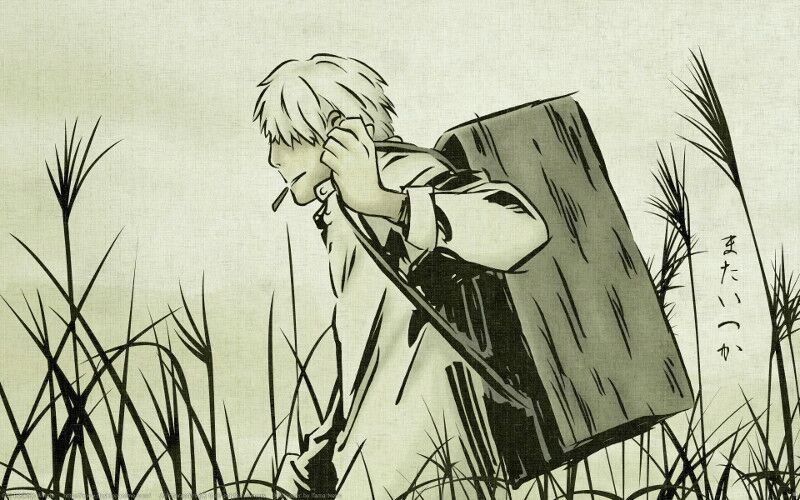

algunas series de anime:
MUSHI-SHI

Guinko ,el personaje principal, es una de esas personas que conoce a los Mushi ,que no son ni plantas ni animales; son distintos a otras formas de vida como los microorganismos y hongos. Por su efímera naturaleza, su existencia y apariencia son desconocidas para la mayoría excepto para un número limitado de humanos que poseen la habilidad de verlos e interactuar con ellos. El es un amo de Mushi (Mushi master, ??, mushi-shi), que viaja para investigar y conocer más a estos seres. En el camino, ayudará a gente que tiene problemas con ciertos sucesos paranormales relacionados con los Mushi.
MADE IN ABYSS

En esta obra, un enorme sistema de cuevas llamado el “Abismo” es el único lugar inexplorado del mundo. Extrañas y poderosas criaturas residen en sus profundidades, junto a preciadas reliquias que los humanos son incapaces de producir. Los misterios del Abismo fascinan a los humanos y estos bajan a sus profundidades. Los aventureros que se adentran en él son conocidos como “Cave Raiders”. Una joven huérfana llamada Rico vive en el pueblo Osu en el filo del Abismo. Su sueño es convertirse en una “Cave Raider”, como su madre, y solventar los misterios del sistema de cuevas. Un día, Rico comienza a explorar las cuevas y descubre un robot con aspecto de un chico humano.